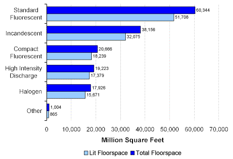
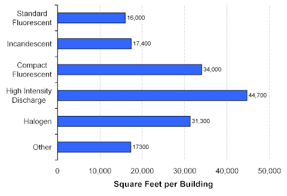

Lighting Equipment
The total amount of floorspace in lit commercial buildings was 60,085 million square feet (or 89 percent of 67,338 million square feet, the total floorspace in all commercial buildings). However, not all of the floorspace within lit buildings was actually lit. A total of 54,696 million square feet was lit (85 percent of the floorspace in lit buildings, and 81 percent of the floorspace in all buildings).
Standard fluorescent fixtures were most commonly used in buildings, with 51,708 million square feet illuminated by that light source (Figure 1). For each of the types of lighting equipment, between 85 and 90 percent of floorspace in lit buildings was actually lit.
Figure 1. Total Floorspace and Lit Floorspace by Type of Lighting Equipment, 1999 Energy Information Administration
Commercial Buildings Energy Consumption Survey
Buildings that used three of the lighting equipment types—high intensity discharge, compact fluorescent, and halogen—were larger than average in size (all three exceeded 31,000 square feet) (Figure 2).
Figure 2. Average Building Size by Type of Lighting Equipment, 1999 Energy Information Administration
Commercial Buildings Energy Consumption Survey
Return to:
“End-Use Equipment”
Specific questions may be directed to:
Alan Swenson
alan.swenson@eia.doe.gov
Release date: May 21, 2002
http://www.eia.gov/consumption/commercial/data/archive/cbecs/char99/light_equip.html
If you are having any technical problems with this site, please contact the EIA webmaster at wmaster@eia.doe.gov.